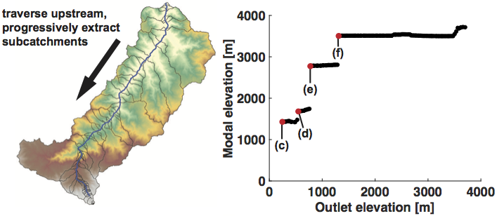

Progressive hypsometry (PH) involves the measurement of hypsometric maxima in nested catchments whose outlets span from the lowest to the highest elevations in a mountain range. It consists of three major components: (i) segmentation of the landscape into large catchments, (ii) calculation of hypsometry along flow paths, (iii) segmentation into nested subcatchments characterized by a shared modal elevation.
